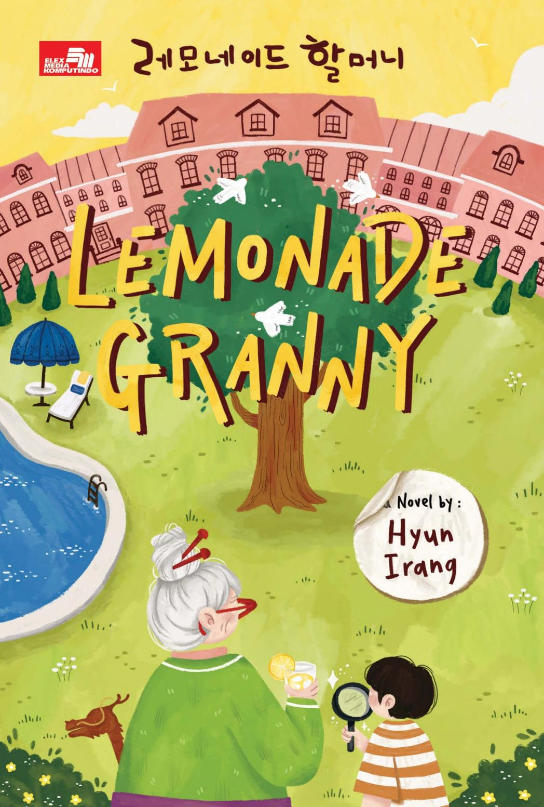

Judul: Lemonade Granny | Penulis: Hyun Irang | Halaman: 200 | Rating:
Definisi "don't judge a book by its cover" yang sesungguhnya. Aku tertarik karena covernya menarik dan ternyata pas baca blurb, loh kok ternyata genrenya mystery + thriller??? Agak shock pastinya.
Hal lain yang aku perhatikan saat membaca buku ini adalah terjemahannya yang santai. Rasanya bukan kayak membaca buku terjemahan, bahasanya luwes dan tidak kaku sama sekali. Aku juga suka tiap babnya ini diberikan sudut pandang yang berbeda. Terkadang para tokoh utama, terkadang narator yang mengambil alih.
Sebetulnya novel ini cukup heartwarming karena menggambarkan latar belakang masing-masing tokoh dengan cukup baik dan merata, sehingga kita bisa tahu kenapa seseorang melakukan this and that.
Aku sangat suka bagaimana cover dan isi bukunya itu berkaitan mengenai asumsi orang-orang mengenai Desa Doran dan realitanya. Cover ini menggemaskan banget, tapi ternyata menipu karena sebenarnya ceritanya ini mengangkat topik yang serius. Sama seperti Desa Doran. Desa Doran digambarkan sebagai rumah sakit lansia pengidap demensia yang mempunyai lingkungan paling sehat dan mendukung para pasiennya, ternyata realitanya ada kebusukan yang disimpan di Desa Doran.
Mengisahkan tentang investigasi yang dilakukan oleh lemonade granny atau si nenek limun dan rekan investigasinya, si bocah asisten. Walaupun thriller, aku suka cerita di buku ini cukup kontras dengan kisah misteri dan thriller pada buku fiksi misteri dan thriller pada umumnya, suram dan gelap.
Pada dasarnya buku ini juga sebagai kritik sosial kepada masyarakat, utamanya terhadap perlakuan kepada lansia pada umumnya dan penderita demensia. Walau bukunya tipis, tapi banyak juga hal yang dibahas selain kritik pada lansia dan ini sangat triggering. Ada kekerasan dalam rumah tangga dan bahkan kekerasan pada anak kecil, kesenjangan sosial antara mereka yang kaya dan yang hidupnya pas-pasan, ada penggunaan obat terlarang dan aborsi, yang semuanya dibahas cukup blak-blakan tanpa tedeng aling-aling.